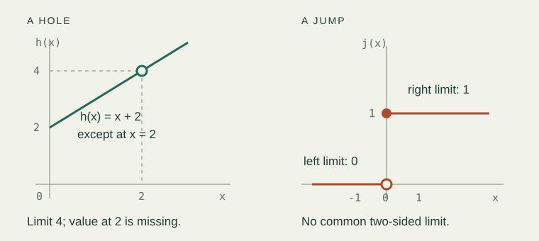
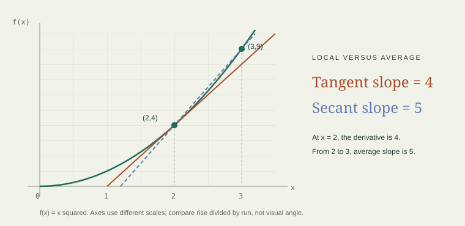
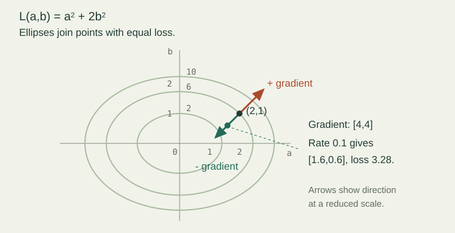
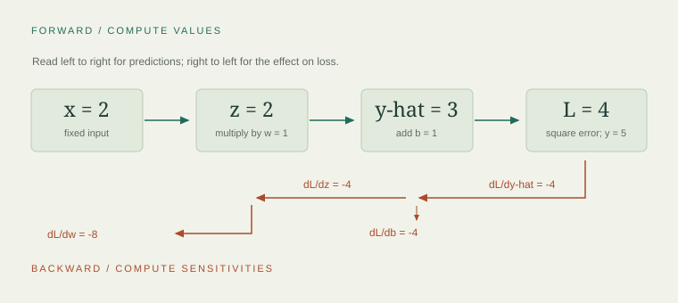

Part I / Mathematical foundations / 02
A language for measuring sensitivity, tracing responsibility, and turning error into a better next step.
The question we are answering
A model made the wrong prediction. Which weights should change, in which direction, and by how much?
In chapter 1, matrices were transformations we already had. Training reverses that perspective: the weights become adjustable inputs to a loss function. Calculus tells us how sensitive that loss is to each weight.
Imagine tuning a delivery-time estimator. If every estimate is too low, increasing one coefficient might help. But with many interacting coefficients, guessing is slow. A derivative tells us how a small change affects the result at the current setting. A gradient gathers that information for many parameters. Backpropagation calculates the gradients efficiently, and an optimizer uses them to change the parameters. We will build these ideas one at a time.
Our examples begin with tiny functions that can be checked by hand. We often choose smooth curves: no corners, jumps, or abruptly changing slopes in the region being studied. Real LLM losses depend on many parameters and data, with much more complicated landscapes than one bowl. The small examples isolate the mechanism, not the full difficulty of training.
A function is a rule that gives one output for each permitted input. For example, f(x)=x^2 maps 3 to 9 and -3 to 9. Inputs need not have distinct outputs. The domain is the set of permitted inputs; the range is the set of outputs actually produced. For this function on real inputs, the range is the nonnegative real numbers.
Read f(3) as "apply function f to input 3," not "multiply f by 3." To evaluate f(x)=x^2, replace every x with the input: f(-3)=(-3)(-3)=9. A function may take several inputs, as T(p,q)=pq does, but still return one output. Mathematical functions describe dependencies; unlike arbitrary code, they do not have hidden mutable state.
Three function families recur in model mathematics: affine rules such as 2x+1 mix and shift; powers such as x^2 model squared error; and exponentials and logarithms connect scores to probabilities and loss. A graph puts inputs on the horizontal axis and outputs on the vertical axis.
| Input x | 2x+1 | x^2 | e^x (rounded) |
|---|---|---|---|
| -1 | -1 | 1 | 0.3679 |
| 0 | 1 | 0 | 1 |
| 1 | 3 | 1 | 2.7183 |
| 2 | 5 | 4 | 7.3891 |
The affine rule increases by 2 whenever x increases by 1. Squaring bends: the change from 0 to 1 is 1, but from 1 to 2 it is 3. The exponential has base e\approx2.71828; each unit increase multiplies its value by e instead of adding a fixed amount. Integer powers mean repeated multiplication, e^2=e(e), while e^{-1}=1/e. The real-input exponential smoothly extends these values and is always positive.
A natural logarithm asks the reverse question: "What power of e gives this number?" Because e^0=1, we have \ln1=0. Because e^1=e, we have \ln e=1. Likewise, \ln(e^2)=2. In general, \ln(e^x)=x and e^{\ln a}=a for positive a.
Negative powers of e give numbers between 0 and 1, so those numbers have negative logarithms. For example, \ln(1/e)=-1. Numbers above 1 have positive logarithms. No real power of e is zero or negative, so a real logarithm accepts only positive inputs. Its output can be any real number. Later, taking the negative logarithm of a probability will turn a small probability into a large loss.
Worked example / A bounded function
The sigmoid function is \sigma(x)=1/(1+e^{-x}), with sigma a function name, not a variable to multiply. At x = 0, e^0=1, so the output is 1/(1+1)=1/2. At x=\ln3, e^{-x}=1/3, giving 1/(1+1/3)=3/4.
Its domain is all real x and its range is strictly between 0 and 1: the denominator is always greater than 1. It approaches, but never reaches, either endpoint for finite input. This makes it useful for some probability links and gates. It is an illustrative nonlinear function, not a claim that every Transformer activation is sigmoid.
Worked example / Functions as a pipeline
Composition means feeding one function's output into another. Let f(x)=2x and g(a)=a+3. To calculate g(f(4)), start inside: f(4)=8. Then g(8)=11. Reverse the order and f(g(4))=f(7)=14. As with matrix multiplication, order matters.
A neural network is a much larger composition. Transformations produce intermediate representations called hidden states. These lead to prediction scores called logits, then to a loss. To differentiate the whole computation, we will connect derivatives through that pipeline.
A limit describes what a function approaches as its input approaches a point. For f(x)=x^2, inputs 1.9, 1.99, and 2.01 give 3.61, 3.9601, and 4.0401. The outputs approach 4:
The notation means "the limit of x squared as x approaches 2." It is about nearby behavior, not necessarily the value at the point. If we redefine only f(2) to be 100, the limit remains 4, while the actual function value is 100. That redefined function is discontinuous at 2.
A function is continuous at a point when its value is defined and equals the limit there. Continuity alone does not guarantee a derivative: |x| is continuous at zero but has a corner. These distinctions matter when choosing derivatives for network operations.
A two-sided limit exists when both sides approach the same number. "Approach" means we can make outputs as close to that number as desired by taking sufficiently close inputs, without requiring the input to equal the point. Superscripts - and + on an approach denote the left and right sides, not negative and positive output values.
Worked example / A hole and a jump
Let h(x)=(x^2-4)/(x-2). We cannot use x = 2 because the denominator would be zero. For other inputs, simplify by factoring. Expand the two factors, then cancel the opposite middle terms:
Replace the numerator with these factors. Since x is not 2, the factor x-2 is nonzero and can be cancelled:
At 1.99 the output is 3.99; at 2.01 it is 4.01. Both sides approach 4. The limit at 2 is therefore 4, even though the original function has no value there. Cancellation helps us calculate nearby values; it does not make the original denominator valid at 2. Defining h(2) to be 4 fills the hole and makes the function continuous there.
Now let j(x)=0 for x<0 and j(x)=1 for x\ge0. Its left-hand limit at zero is 0; its right-hand limit is 1. Since they disagree, the two-sided limit does not exist. Choosing a different value exactly at zero cannot repair this jump.

Continuity has three checks: the value exists, the two-sided limit exists, and they agree. The absolute-value function |x| means the nonnegative magnitude of x: it equals x for nonnegative x and -x for negative x. Its values approach 0 from both sides and its value is 0, so it passes all three checks. Its left slope -1 and right slope +1 nevertheless disagree; the next section explains why that prevents a derivative at zero.
Check before differentiating
If a curve approaches 4 from both sides at x = 2 but is assigned value 100 there, does its limit become 100?
No. The limit stays 4. The value 100 breaks continuity at the point, and differentiability there is impossible. Training frameworks use derivative rules for their operations; they do not run a numerical limit loop on every update.
If a service charges a flat $2 per request, one more request adds $2. Its rate of change is constant. But on a curved cost or loss function, the rate depends on where you are. A derivative measures that instantaneous rate, rather than an average over a large interval.
A rate is output change divided by input change. If a toy robot's distance after t seconds is s(t)=t^2 meters, it moves from 4 meters at t = 2 to 9 meters at t = 3. Its average speed over that second is (9-4)/(3-2)=5 meters per second. Instantaneous speed at t = 2 asks for progressively shorter comparisons around that instant.

f'(x), read "f prime of x," is the derivative; h is a nonzero input increment that approaches zero. The quotient is an average rate of change before taking the limit.
The numerator f(x+h)-f(x) is the vertical change on the graph; h is the horizontal change. Dividing gives the slope of a secant, a line through the two points. Now bring the second point closer, from either side. If the slopes approach the same finite number, the function is differentiable at x.
That number is the slope of the tangent: the line that follows the curve's direction at the point. A tangent describes local direction; it need not stay on one side of the whole curve.
Worked example / Derive, don't memorize
For f(x)=x^2, expand the numerator and simplify for nonzero h:
Thus f'(2)=4. Increasing x from 2 by 0.01 should increase the output by approximately 4(0.01)=0.04. The exact increase is 2.01^2-2^2=0.0401. The tiny discrepancy comes from curvature.
Do not substitute zero for h in the original fraction: that would divide by zero. The limit is what makes the definition work.
| Nonzero h | ((2+h)^2-4)/h=4+h |
|---|---|
| 1 | 5 |
| 0.1 | 4.1 |
| 0.01 | 4.01 |
| -0.01 | 3.99 |
| -0.1 | 3.9 |
The table approaches 4 from both sides. By contrast, at zero the difference quotient of |x| is |h|/h: +1 for positive h, -1 for negative h. There is no common limit and thus no derivative at the corner. Some network operations have such exceptional points; frameworks document a chosen backward rule there rather than proving classical differentiability.
The practical reading is a first-order approximation:
Here \Delta x is a small proposed change. The approximation generally improves as that change gets smaller, where the function is differentiable. Derivative units are output units per input unit; multiplying by an input change yields an output change.
| Rule | Derivative | Condition / interpretation |
|---|---|---|
| Constant c | 0 | No sensitivity to x |
| x^n | nx^{n-1} | For positive integer n, all real x |
| af(x)+bg(x) | af'(x)+bg'(x) | a and b are constants |
| e^x | e^x | e is approximately 2.71828 |
| \ln x | 1/x | x must be positive |
For example, f(x)=3x^2+2x+5 has derivative 6x+2. A negative derivative means a small positive input change decreases the output. It does not mean the output itself is negative.
For a constant c, the quotient numerator is c-c=0, so its derivative is zero. For ax+b, with fixed a and b, the numerator becomes a(x+h)+b-(ax+b)=ah; dividing by h leaves a. Adding functions adds their change quotients, and multiplying by a constant scales the quotient. That is why you can differentiate a polynomial term by term.
For a cube, expand (x+h)^3=x^3+3x^2h+3xh^2+h^3. Subtract x^3 and divide by nonzero h. This leaves 3x^2+3xh+h^2. As h approaches zero, the last two terms disappear. The derivative is 3x^2.
The same pattern works for any positive integer power n. After subtracting x^n, the term containing just one h is nx^{n-1}h. All other terms contain at least h^2. Dividing by h and taking the limit leaves nx^{n-1}. This explains the power rule.
Worked example / Differentiate each term
For 3x^2+2x+5, the square contributes 3(2x)=6x; the line contributes 2; the constant contributes 0. At x = 2 the value is 12+4+5=21 but the slope is 12+2=14. A 0.01 increase predicts about 0.14 extra output. Direct evaluation gives 21.1403, so the exact increase is 0.1403.
When both factors vary, do not multiply their derivatives. A product can change because the first factor changes, because the second changes, or because both change together. For a tiny step h, the first two effects are proportional to h. The combined effect is proportional to h^2, so it disappears after dividing by h and taking the limit.
The result is the product rule: (fg)'=f'g+fg'. In words: differentiate the first factor and keep the second, then keep the first and differentiate the second. Add those contributions.
For (x+1)x^2, this gives 1(x^2)+(x+1)(2x)=3x^2+2x. At x = 2, the derivative is 16. Expanding the original product to x^3+x^2 and differentiating term by term checks the result.
For a fraction, use the quotient rule. To see where it comes from, call the fraction r=f/g, with g nonzero. Then f=rg. The product rule gives f'=r'g+rg'. Subtract rg', divide by g, and replace r with f/g. The result is:
For x/(x+1), its numerator is 1(x+1)-x(1)=1, giving slope 1/(x+1)^2. At x = 1 the slope is 1/4; x = -1 is outside the domain. The product and quotient rules apply where their component derivatives exist.
Why is the derivative of e^x itself? The special base e makes the slope at zero equal to 1: \lim_{h\to0}(e^h-1)/h=1. At any x, use e^{x+h}=e^x e^h to rewrite the change quotient as e^x(e^h-1)/h. As h approaches zero, the fraction approaches 1, leaving e^x.
A logarithm reverses the exponential's input and output, so it reverses their small changes too. At output x, the exponential's slope is x; the logarithm's slope is therefore 1/x. For example, at x = 2 the log slope is 1/2. At x = 0 the log is not defined. Section 4 confirms this reciprocal rule using the chain rule on e^{\ln x}=x.
Check value, slope, and sign separately
For f(x)=x^3+4 at x = -1, calculate value and derivative. Predict a 0.01 input increase.
The value is -1+4=3; the derivative is 3(-1)^2=3. Predict output 3.03. Exactly, (-0.99)^3+4=3.029701. A negative input does not imply a negative slope.
LLM connection. Frameworks usually record the operations in a computation and apply their known derivative rules. This is automatic differentiation. It evaluates the rules numerically, so floating-point rounding still applies. It does not usually estimate each derivative by repeatedly nudging each weight. Such finite differences are useful for checking a small implementation, but subtracting nearly equal rounded numbers can lose accuracy.
A bill depends on both price and quantity. Let T(p,q)=pq. To measure the effect of price alone, hold quantity fixed. Then q is just a constant multiplier, so \partial T/\partial p=q. To measure the effect of quantity alone, hold price fixed. This gives \partial T/\partial q=p.
Each is a partial derivative: vary one input and keep the others constant. The curved symbol \partial marks that choice. Here we allow tiny changes in quantity to study sensitivity; a real order still contains an integer number of items.
This is the ordinary derivative definition with only p allowed to vary. At p = 3 and q = 4, the bill is 12. Increasing only p to 3.01 gives 12.04: rate 0.04/0.01=4. Increasing only q to 4.01 instead gives 12.03: rate 0.03/0.01=3. The two sensitivities differ because they answer different questions.
For model training, use a toy two-parameter loss:
L is a scalar loss; w_1,w_2 are parameters; \partial denotes a partial derivative; \nabla L, read "gradient of L," collects the partial derivatives into a vector.
To differentiate with respect to w_1, hold w_2 fixed. The term 2w_2^2 is then constant, so its derivative is zero. Only w_1^2 changes, giving 2w_1. Reverse the roles for w_2: the derivative is 2(2w_2)=4w_2.
Check at (2,1), where loss is 6. Increasing only the first coordinate by 0.01 gives loss 6.0401 and rate 0.0401/0.01=4.01. Increasing only the second by 0.01 gives loss 6.0402 and rate 0.0402/0.01=4.02. As the increment shrinks, both rates approach 4, their partial derivatives at this point.
Worked example / Predict a small change
At \mathbf{w}=[2,1]^\top, loss is 4+2=6 and the gradient is [4,4]^\top. For a displacement \Delta\mathbf{w}=[-0.01,-0.02]^\top, chapter 1's dot product predicts:
The predicted new loss is 5.88. The exact value is 1.99^2+2(0.98)^2=5.8809. Again, sensitivity predicts a local change, not an exact finite jump.
Which direction should we move? Compare steps with the same small Euclidean length, using chapter 1's sum-of-squares rule. The gradient direction gives the largest predicted increase in loss. The opposite direction, the negative gradient, gives the largest predicted decrease when the gradient is nonzero.
This says which way to go, not how far. A large step may behave very differently. The geometric claim also depends on how we measure step length: rescaling parameter coordinates or choosing a different distance rule changes that comparison.
A contour connects parameter settings with equal loss, like equal-height lines on a map. Holding one parameter fixed slices a surface into an ordinary curve. A gradient combines the slopes of these coordinate slices. It points across contours rather than following an equal-loss route.

For a differentiable loss and a unit direction vector v, the directional derivative is the rate per unit distance in that direction:
At gradient [4,4], heading along [-1,0] gives rate -4. Heading diagonally along [-1/\sqrt2,-1/\sqrt2]^\top gives -8/\sqrt2=-4\sqrt2\approx-5.657. The dot-product identity from chapter 1 makes the steepest-direction claim precise: with unit v, this rate is \|\nabla L\|_2\cos\theta, largest when aligned, smallest when opposite.
The gradient norm is \sqrt{4^2+4^2}=\sqrt{32}\approx5.657. Multiplying the loss by 0.001 leaves its contour directions unchanged but multiplies the gradient and its norm by 0.001. A small gradient can reflect numerical scaling, not necessarily closeness to a good solution.
Check a sideways move
At gradient [4,4], what first-order change is predicted for displacement [0.01,-0.01]?
4(0.01)+4(-0.01)=0. This move is perpendicular to the gradient. Zero predicted first-order change does not guarantee identical actual loss: curvature can contribute a smaller, second-order change.
In an LLM, the scalar loss depends on many matrix and vector parameters. Gradients have the same shapes as those parameters. You do not need to flatten them into one enormous vector in code; the vector view is a mathematical convenience.
When one function feeds another, an input change passes through both stages. Let u=f(x) and y=g(u). First, a small change in x gives \Delta u\approx f'(x)\Delta x. Next, that change in u gives \Delta y\approx g'(u)\Delta u.
Replace \Delta u in the second expression with the first estimate. We get \Delta y\approx g'(u)f'(x)\Delta x. The two sensitivities multiply because the change passes through one stage and then the other. Taking the derivative limit gives the chain rule:
Work from the inside out to find the values, then multiply the slopes. If u=2x+1 and y=u^2, at x = 1 we have u = 3 and y = 9. The inner slope is 2. The outer slope is 2u=6, evaluated at u = 3, not at x = 1.
The total slope is 6(2)=12. A 0.01 input increase should therefore add about 0.12 to y. Direct calculation gives (2(1.01)+1)^2=9.1204, close to the predicted 9.12.
Apply this to e^{\ln x}=x for positive x: the left derivative is e^{\ln x}(\ln x)'=x(\ln x)'; the right derivative is 1. Dividing by x gives (\ln x)'=1/x. The derivative rules are connected tools, not unrelated formulas.
Suppose a delivery-time predictor has one adjustable coefficient. A coefficient changes an intermediate score, which changes a prediction, which changes the squared error. The chain rule connects those local sensitivities.
x is input; w is a weight; b is a bias; \hat y is the prediction; y is the fixed target; and z is an intermediate value. We use squared error without a factor of 1/2.
For this delivery example, x can be route distance in kilometers, w minutes per kilometer, and b, y, and the prediction minutes. Multiplying w by x yields minutes, so adding b is dimensionally valid; the squared loss has units of minutes squared. Later numerical network examples use abstract feature units rather than claiming these two coefficients describe real routing behavior.

Worked example / Trace one weight
Use x=2,w=1,b=1,y=5. Forward: z=2, \hat y=3, and L=4.
Multiply sensitivities along the path from the weight to the loss:
Likewise, \partial L/\partial b=-4. A small increase in either parameter decreases the loss here. The weight has twice the local influence per unit because the input multiplier is 2.
A computation graph shows operations connected by the values they pass to one another. Backpropagation starts at the loss and works backward through that graph, applying the chain rule. This is called reverse-mode differentiation. It reuses intermediate results instead of rerunning the whole model separately for every parameter.
Keep two rules distinct. Along a path, multiply derivatives, because a change passes through successive operations. When a value affects the loss through several paths, add their contributions, because each path adds an effect on the same loss.
A branch matters
If L(w)=w^2+w, w reaches the loss through two branches. The total derivative is 2w+1, not the product of those branches. A residual path in a network is another reason gradients can have multiple routes.
The same rules apply to the row-batch map Y=XW from chapter 1. Suppose the backward pass has already found how loss depends on each entry of Y. Collect these sensitivities in G=\partial L/\partial Y, called the upstream gradient. Now we need to pass that information back to W and X.
The results are \partial L/\partial W=X^\top G and \partial L/\partial X=GW^\top. If X is n-by-d and G is n-by-m, these products have shapes d-by-m and n-by-d respectively, matching W and X. The worked example shows how multiplying along paths and adding contributions produce these matrix formulas.
Worked example / Why the transpose appears backward
Each output entry is Y_{ij}=\sum_k X_{ik}W_{kj}. The derivative with respect to W_{kj} contributes X_{ik} for each row i. Add all paths: (\partial L/\partial W)_{kj}=\sum_i X_{ik}G_{ij}, exactly entry (k,j) of X^\top G.
Take X=\begin{bmatrix}1&2\\3&4\end{bmatrix}, W=[2,1]^\top, and two targets [3,12]. The predictions are [4,10]. Using the sum of two squared errors gives loss 1^2+(-2)^2=5 and upstream gradient G=[2,-4]^\top.
Weight gradients add each input column's contributions:
Input gradients are GW^\top=\begin{bmatrix}4&2\\-8&-4\end{bmatrix}. Each gradient has the shape of the object it differentiates. Averaging rather than summing these two losses would divide every listed gradient by 2.
This also explains chapter 1's least-squares normal equations. For summed squared errors, G=2(X\boldsymbol\theta-\mathbf y), so the coefficient gradient is 2X^\top(X\boldsymbol\theta-\mathbf y). Setting it to zero and distributing the matrix product yields X^\top X\boldsymbol\theta=X^\top\mathbf y. We have derived the earlier fitting rule from local sensitivities rather than memorized another unrelated formula.
Repeated chain-rule multiplication explains vanishing gradients: six local slopes of 0.1 multiply to 0.1^6=0.000001, so a distant parameter receives a very small signal through that path. Ten slopes of 2 multiply to 2^{10}=1024, an exploding gradient. Real networks have many paths and sums as well as products, so these are mechanisms, not universal predictions.
For a concrete nonlinear example, return to \sigma(x)=1/(1+e^{-x}). The numerator is constant. The denominator's derivative is -e^{-x} by the chain rule. The quotient rule therefore gives \sigma'(x)=e^{-x}/(1+e^{-x})^2: its two minus signs cancel. Rewriting the factors gives \sigma'(x)=\sigma(x)(1-\sigma(x)).
At output 0.5 the slope is 0.5(1-0.5)=0.25. At output 0.9 it is 0.9(1-0.9)=0.09. Near either endpoint, the slope approaches zero. The function is saturated there: changing its input barely changes its output.
Residual additions create an identity path with derivative 1 alongside the block's derivative: for y=x+F(x), dy/dx=1+F'(x). This can help signal flow, but does not guarantee that gradients never vanish or explode. Clipping, discussed next, limits large gradients; it cannot manufacture a missing small signal.
Check both routes
If L(w)=(2w)^2+w, find its derivative at w = 1.
The squared branch contributes 2(2w)(2)=8w, and the direct branch contributes 1. At w = 1 the total is 9. Expanding to 4w^2+w gives the same answer.
LLM connection. Training sends loss sensitivities back through the vocabulary projection, Transformer blocks, and embeddings. The gradient measures local sensitivity under the training objective; it is not a human-readable explanation of a model's reasoning or a complete assignment of semantic "blame."
Once derivatives are available, plain gradient descent subtracts a scaled gradient:
\boldsymbol{\theta} denotes all trainable parameters; t is the update index; \eta>0 is the learning rate. The gradient is evaluated at the current parameters.
Worked example / One step you can audit
Let L(w)=(w-4)^2, start at w_0=0, and choose \eta=0.1. The derivative is 2(w-4), so the initial gradient is -8.
Loss falls from 16 to 10.24. The next gradient is -6.4, giving w_2=1.44 and loss 6.5536. We recalculate the gradient after every update.
Experiment 02 / Direction is not enough
Use L(w) = (w - 4)2, starting at w = 0. Compare rates 0.1, 0.5, 1.0, and 1.1. Reset between experiments.
Up to 20 steps per experiment. This exact quadratic is unusually simple; real training is not a one-dimensional bowl.
Here the weight error is the signed difference from the best value, w_t-4. Substitute the derivative into the update and subtract 4 from both sides. This gives w_{t+1}-4=(1-2\eta)(w_t-4). Each step multiplies the old error by 1-2\eta.
For the error to shrink, this multiplier must lie between -1 and 1, giving 0<\eta<1. A negative multiplier makes the weight cross from one side of 4 to the other. Rate 0.5 makes the multiplier zero and reaches the minimum in one step. Rate 1 keeps flipping the error's sign without shrinking it. Larger rates increase any nonzero error. These thresholds apply to this function, not to LLMs generally.
A training objective combines per-example losses into the quantity we want to minimize. For N training examples, an equal-weight mean objective and a B-example mini-batch gradient are:
The lowercase \ell_i is loss on example i; \mathcal B is the selected set of B examples. The notation i\in\mathcal B means include only those examples in the sum. Evaluate all their gradients at the same current parameters, add them, and divide by B. The derivative of a mean is the mean of the derivatives, using the sum and constant-multiple rules we already know.
| Method | Examples per gradient | Tradeoff |
|---|---|---|
| Full-batch gradient descent | All N | Exact gradient of the stated training-data objective; expensive per update. |
| Single-example stochastic gradient descent (SGD) | 1, typically sampled | Cheap but noisy; processes little data in parallel per update. |
| Mini-batch training | B, usually between 1 and N | Processes examples together to use hardware efficiently and average some sampling noise. Often also called SGD. |
Worked example / Average gradients before updating
Let four losses be \ell_i(w)=(w-y_i)^2 for targets 1,3,5,7. At w = 0, their gradients are -2,-6,-10,-14. The full mean is -32/4=-8. The first two form a mini-batch with mean (-2-6)/2=-4. The first example alone gives -2.
At rate 0.1, the three choices update w from 0 to 0.8, 0.4, and 0.2 respectively. A sampled batch may even increase the full objective on a step. Gradient noise is not an error in the chain rule. Sampling strategy and loss reduction determine exactly what is being estimated.
Momentum carries some previous update direction forward. One common convention uses velocity u, momentum coefficient 0\le\beta<1, and current gradient g:
The counter t starts at 1. Calculate g_t at the current parameter \theta_{t-1}, combine it with the previous velocity, then update the parameter. For gradients -4 then -3 and \beta=0.9, we get u_1=-4 and u_2=0.9(-4)-3=-6.6. Starting at 0 with rate 0.1 gives parameters 0.4 then 1.06.
Repeated gradients in the same direction build up velocity. Opposite directions partly cancel. Momentum carries information between updates; it is not the same as averaging losses within a batch.
Adam keeps two running summaries for each parameter. The first, m, tracks gradient direction. The second, v, tracks gradient size by averaging squared gradients. Squaring removes the sign: gradients -4 and +4 both contribute 16 to v.
These are exponential moving averages: keep a fraction of the old summary and add a fraction of the new observation. Older observations receive less weight at each update. Adam then corrects the summaries' zero starting values and divides the direction estimate by a size estimate. Read the formula in those three stages:
m_0=v_0=0; 0\le\beta_1,\beta_2<1 control how much history to keep. Hats mark averages corrected for their zero initialization. The small positive number \epsilon prevents a zero denominator. As with momentum above, g_t is evaluated at \theta_{t-1}.
For vector or matrix parameters, apply the squares, square roots, and divisions entry by entry. These are not matrix products. Taking \sqrt{\hat v_t} puts the size estimate back in gradient units before dividing.
The v average measures squared gradient size, not variance around a mean. Starting m and v at zero pulls their early values toward zero. Dividing by 1-\beta^t corrects this initialization bias. Here t is a power, such as 0.9^2, not a transpose.
To see the correction, suppose the gradient stayed at a constant g and \beta_1=0.9. The first average is 0.1g; the second is 0.9(0.1g)+0.1g=0.19g. Those multipliers are 1-0.9^1 and 1-0.9^2. Dividing by them restores g rather than mistaking the zero initialization for evidence of smaller gradients. The squared-gradient average follows the same reasoning.
Worked example / Adam's first update
Use g_1=-4, \beta_1=0.9, \beta_2=0.99. Then m_1=0.1(-4)=-0.4 and v_1=0.01(16)=0.16. Bias correction gives \hat m_1=-0.4/0.1=-4 and \hat v_1=0.16/0.01=16.
At rate 0.1 with \epsilon=10^{-8} (0.00000001), the update is approximately -0.1(-4)/(4+10^{-8})=+0.1. Compare plain descent's +0.4 from the same raw gradient. Adam scales coordinates using their own histories; this first-step example is not a universal step length or a guarantee of better learning.
Weight decay gently shrinks selected weights toward zero, discouraging unnecessarily large magnitudes. AdamW separates that shrinkage from Adam's adaptive gradient term:
Lambda controls decay strength. With no gradient contribution, weight 5, rate 0.1, and decay 0.01, the result is (1-0.001)(5)=4.995. The weight shrinks slightly toward zero.
Another way to discourage large weights is to add an L2 penalty, (\lambda/2)\|\boldsymbol\theta\|_2^2, to the loss. This is lambda/2 times the sum of squared parameters. Its gradient is \lambda\boldsymbol\theta. With plain gradient descent, subtracting this extra gradient gives the same shrinkage as weight decay.
With Adam, the extra penalty gradient also enters m and v, changing their history and scaling. AdamW instead applies shrinkage separately. The two methods are therefore not generally equivalent. Such choices are forms of regularization: they change which fitted solutions we prefer. They do not guarantee good results on unseen data.
Gradient clipping limits an unusually large gradient before the update. It does not delete negative entries. Choose a maximum norm c>0. If the gradient is longer than c, shrink the whole vector to length c. Otherwise, leave it alone. For a nonzero gradient, both cases are covered by multiplying \mathbf g by \min(1,c/\|\mathbf g\|_2). A gradient [3,4]^\top clipped to norm 2 becomes [1.2,1.6]^\top.
Here \min selects the smaller value. The gradient norm is 5, so the factor is \min(1,2/5)=0.4. Both coordinates shrink by the same factor, preserving direction. A zero gradient stays zero without dividing by its norm. Clipping bounds the gradient supplied to the optimizer; an optimizer with history and adaptive scaling still decides the final parameter step.
A learning-rate schedule changes the rate over updates. For example, warmup rates 0.001, 0.002, 0.003 gradually increase the rate early in training, before a later decline. Clipping thresholds and schedules are design choices to evaluate, not calculus identities.
Check the optimizer's job
Two example gradients are [2,-4] and [0,2]. Find their mean and a rate-0.1 descent update from [1,1].
The mean is [(2+0)/2,(-4+2)/2]=[1,-1]. Subtracting 0.1 times it yields [0.9,1.1]. Backpropagation calculated the gradients; the optimizer performed this subtraction.
# Illustrative PyTorch training step; model and batch are already defined.
optimizer.zero_grad() # Clear accumulated gradients.
logits = model(batch.inputs) # Forward computation.
loss = loss_fn(logits, batch.targets)
loss.backward() # Calculate parameter gradients.
optimizer.step() # Apply the optimizer's update.
Real causal-language-model code also aligns input positions with next-token targets, excludes padding from the loss, and chooses a reduction such as a mean over valid tokens. The snippet isolates the difference between backward() and step(); it is not a standalone training program.
At one position, a vocabulary projection gives one raw score per candidate token. These scores are logits. They can be negative and need not sum to 1. Softmax converts them into probabilities in two steps: take the exponential of each score, then divide each result by their total.
z_i is token i's logit; p_i is its probability; V is vocabulary size; j indexes all candidates. For finite real logits, exact-arithmetic probabilities are positive and sum to 1.
A probability is a share of a total, between 0 and 1. The model's probabilities for the mutually exclusive next-token choices must sum to 1. Exponentials make all the shares positive. Dividing by their sum makes the total exactly 1: \sum_i p_i=(\sum_i e^{z_i})/(\sum_j e^{z_j})=1. The index letters i and j range over the same vocabulary.
Softmax depends on differences between scores, not their common starting level. Adding a constant c to every logit multiplies every exponential by e^c. That factor cancels in each fraction, leaving probabilities unchanged. We use this fact to keep the computation within the computer's number range: subtract the largest logit before taking exponentials.
The symbol \max selects the largest value. After subtracting it, the largest shifted score is zero, whose exponential is 1. The other exponentials are at most 1, avoiding overflow, when a number is too large to represent. Very small terms can still round down to zero, called underflow. For loss, use a framework's combined cross-entropy or log-softmax implementation rather than directly computing log(softmax(logits)). These implementations avoid losing information by first rounding a tiny probability to zero.
Worked example / Predict the next token
Use a three-token toy vocabulary for "The kettle is ...": "hot," "cold," and "blue." Assign logits [2,1,0]. Their exponentials are approximately [7.3891,2.7183,1], summing to 11.1073.
Suppose the observed target token is "hot." The single-target cross-entropy loss is the negative log-probability assigned to that observed token:
Here k is the target's index. Assigning probability 0.9 to it gives loss about 0.1054; assigning 0.1 gives loss about 2.3026. The logarithm heavily penalizes confident misses. One training target is not a claim that every alternative continuation is linguistically impossible.
At target probability 1, loss is -\ln1=0. As target probability approaches zero from above, its logarithm decreases without bound and loss grows without bound. An exact finite-logit softmax never reaches either endpoint, though floating-point rounding can. This is why stable loss implementations matter.
For a one-hot target vector \mathbf{y}, y_k=1 and other entries are zero. Differentiate the combined softmax and cross-entropy:
To get the first expression, write the softmax denominator as a=\sum_j e^{z_j}. This sum is positive, so its logarithm is defined. First use the log rule that division becomes subtraction. The leading minus sign changes the denominator term to a plus:
Next, use \ln(e^{z_k})=z_k. The loss becomes -z_k+\ln a, as stated above.
Now differentiate the two terms. The first contributes -1 for the target logit and 0 for any other logit. The second contributes the corresponding softmax probability. Together they give "prediction minus target."
Spell out the chain rule: let a=\sum_j e^{z_j}. With respect to z_i, only term i varies, so \partial a/\partial z_i=e^{z_i}. The derivative of \ln a is (1/a)e^{z_i}=p_i. The derivative of -z_k contributes -y_i, where the one-hot indicator y_i is 1 only when i is the target. Adding these paths gives the stated result, including the negative signal for the observed target.
Subtract the target vector [1,0,0] from our toy probabilities. The logit gradient is approximately [-0.3348,0.2447,0.0900]. If we could update these logits directly, gradient descent would subtract each entry. Subtracting the negative target entry would raise its score; subtracting the positive entries would lower competing scores.
In a real network, logits are outputs, not independent trainable parameters. Backpropagation passes their gradients to shared weights. A weight change can affect many logits, tokens, and examples at once.
Experiment 03 / Relative scores become probabilities
The observed target stays "hot." Raise "cold" while leaving "hot" unchanged. Then try adding 1 to all three logits.
Three-token vocabulary, one observed target, natural logarithms, and unscaled logits. Displayed percentages are rounded.
Training versus inference. Standard training computes loss against observed target tokens without needing to sample a token first. Ordinary inference performs forward computations and a decoding rule such as sampling or argmax; it normally does not backpropagate a training loss or update the weights. This distinction separates "generating" from "learning."
Argmax chooses the index with the largest score: for logits [2,1,0], it picks the first token. Sampling instead draws according to the predicted probabilities, so a lower-probability token can still be selected. Neither selection rule is the gradient calculation. The examples here do not try to teach a full decoding system.
A sequence probability multiplies conditional probabilities: each token probability is conditioned on the preceding tokens. The vertical bar in P(b\mid a) means "probability of b given a." This multiplication rule does not assume the tokens are independent.
Conditioning restricts attention to cases where the given event happened. If event a has half the probability mass, and b occurs in one quarter of that restricted mass, both together have (1/2)(1/4)=1/8 of the original total. Sequence likelihood applies this same rule repeatedly to growing token prefixes.
Worked example / Products become sums
Suppose the first observed token has probability 0.5 given the prompt, and the next observed token has probability 0.25 given the prompt and the first observed token. The two-token sequence probability is 0.5(0.25)=0.125.
The identity \ln(ab)=\ln a+\ln b for positive a,b follows because multiplying exponentials adds their exponents. Thus the negative log sequence probability is:
Averaging over the two targets gives about 1.0397 per token.
Maximum likelihood chooses parameters that make the observed training sequences more probable. Log is increasing, so maximizing a positive likelihood is equivalent to maximizing its logarithm, and hence minimizing its negative logarithm. This connects the per-token cross-entropy objective to sequence modeling without multiplying thousands of tiny probabilities in floating point.
Here T counts valid target positions. The symbol y_t is the observed token ID at position t, not the earlier one-hot vector. The expression p_t(y_t\mid\ldots) selects the probability assigned to that observed token, given the listed prefix.
In ordinary teacher-forced training, we feed in the earlier observed tokens, rather than tokens sampled from the model, to predict each next token. Padding and other excluded positions do not count toward T. Summing and averaging a fixed set of T losses give the same best parameter settings, but averaging divides the gradients by T. With different sequence lengths, averaging each sequence separately can also weight the training data differently from averaging all valid tokens together.
Check probabilities versus loss
Two target tokens each receive probability 1/2. What are sequence probability, summed loss, and mean loss?
Probability is 1/4. Summed loss is -\ln(1/4)=2\ln2\approx1.3863; mean loss is \ln2\approx0.6931. These are distinct quantities with distinct reductions.
A first derivative says how the output is changing. A second derivative says how that slope is changing. For L(w)=(w-4)^2, the first derivative is 2(w-4) and the second is 2. In one dimension, positive second derivative means the graph bends upward locally; negative means it bends downward.
Write the second derivative as f''(x)=d(f'(x))/dx or d^2f/dx^2. The superscript 2 means differentiate twice, not square the first derivative. If position depends on time, its first derivative is velocity and its second derivative is acceleration, the rate at which velocity changes. The same operation measures the changing sensitivity of a loss.
| x | Value x^3 | Slope 3x^2 | Curvature 6x |
|---|---|---|---|
| -1 | -1 | 3 | -6 |
| 0 | 0 | 0 | 0 |
| 1 | 1 | 3 | 6 |
Differentiate x^3 once by the power rule to get 3x^2, then again to get 3(2x)=6x. At x = -1 the slope is positive while curvature is negative: the output is increasing, but the slope is decreasing as x increases. Slope sign and curvature sign answer different questions.
A zero first derivative does not certify a minimum. At zero, f(w)=-w^2 has derivative zero but a maximum. The function w^3 has both first and second derivatives zero at zero but neither a local minimum nor a local maximum. A vanishing second derivative at one point does not imply a straight graph nearby.
With many parameters, we need to know how each partial derivative changes as each parameter changes. Collect those rates in a matrix called the Hessian. Entry (i,j) describes how the slope for one coordinate changes with the other:
H has one row and column per scalar parameter; \Delta\mathbf w is the proposed parameter change. Evaluate the gradient and H at the current \mathbf w. The approximation assumes the needed derivatives exist and behave smoothly nearby.
Read the approximation in three pieces: current loss, plus the gradient's predicted change, plus a correction for bending. That last piece is quadratic: it contains products of two displacement entries. The next example builds H, then shows how to calculate the correction.
A mixed partial derivative changes a slope with respect to a different coordinate. For F(u,v)=u^2+uv+2v^2, the first partials are \partial F/\partial u=2u+v and \partial F/\partial v=u+4v. Differentiate each again:
Start with the u-slope, 2u+v. Changing u changes this slope at rate 2; changing v changes it at rate 1. These give the first row [2,1]. For the v-slope, u+4v, the rates are 1 and 4, giving the second row [1,4].
The two mixed entries are 1. For example, at (1,2) the u-slope is 4. Increase only v by 0.1 and that slope becomes 4.1. When second partials are continuous nearby, both orders of mixed differentiation agree, so H is symmetric. The notation means differentiate a first-partial function again; it does not mean divide by two small input changes.
The expression \Delta\mathbf w^\top H\Delta\mathbf w is a quadratic form. Calculate it as row times matrix times column to get one scalar. It measures curvature along the proposed displacement, not just along a coordinate axis.
Why multiply by 1/2? In one dimension, differentiating \tfrac12 c(\Delta w)^2 twice gives c, the required curvature. Without the half, it would give 2c. In a symmetric matrix product, the off-diagonal terms also appear twice. The same half gives those terms the correct coefficients.
For our earlier L=w_1^2+2w_2^2, use H=\operatorname{diag}(2,4) and \Delta\mathbf w=[-0.01,-0.02]^\top. Half the quadratic form is \tfrac12(2(0.01)^2+4(0.02)^2)=0.0009. Adding it to the first-order prediction 5.88 gives 5.8809, exactly the value calculated in section 3. A quadratic has no higher-order correction; a general smooth loss does.
Worked example / A steep direction and a shallow one
For L(w_1,w_2)=w_1^2+2w_2^2, the Hessian is \operatorname{diag}(2,4). Its eigenvalues are 2 and 4: curvature is twice as large in the second coordinate direction.
At [2,1]^\top, a rate-0.1 gradient step gives [1.6,0.6]^\top, reducing loss from 6 to 2.56+0.72=3.28. A rate-0.6 step gives [-0.4,-1.4]^\top, with loss 4.08, but repeated steps diverge in the second coordinate because its error multiplies by 1-4(0.6)=-1.4.
A saddle point can have zero gradient while curving upward along one direction and downward along another. For f(u,v)=u^2-v^2, the origin has this property: moving along u increases f, while moving along v decreases it.
A point with zero gradient is stationary. That says the first-order signal is zero; it does not yet tell us whether the point is good.
At a local minimum, no sufficiently nearby point has a lower value. At a global minimum, no allowed point anywhere has a lower value. A local maximum reverses the nearby comparison. A strict local minimum has a lower value than every other point sufficiently nearby.
At a stationary point, the gradient term in our approximation is zero. Curvature then gives the next clue. If every direction bends upward, we have a strict local minimum. If some directions bend upward and others downward, we have a saddle. The table gives the formal names and the cases where this test cannot decide.
| Curvature in nonzero directions | Name / eigenvalues | Conclusion and example at the origin |
|---|---|---|
| \mathbf d^\top H\mathbf d>0 for every nonzero d | Positive definite; all eigenvalues positive | Strict local minimum: u^2+2v^2, H = diag(2,4). |
| Negative for every nonzero d | Negative definite; all eigenvalues negative | Strict local maximum: -u^2-2v^2, H = diag(-2,-4). |
| Positive in some directions, negative in others | Indefinite; positive and negative eigenvalues | Saddle: u^2-v^2, H = diag(2,-2). |
| No negative direction, but some zero curvature | Positive semidefinite; eigenvalues nonnegative | Inconclusive: u^4+v^2 and -u^4+v^2 share H = diag(0,2), but the former has a minimum and the latter a saddle. |
In this table, d is a direction vector, not a feature count. Recall chapter 1: along an eigenvector, a matrix acts by a single multiplier. For the Hessian, H\mathbf d=\lambda\mathbf d, so \mathbf d^\top H\mathbf d=\lambda\|\mathbf d\|_2^2. A nonzero vector has positive squared length. The eigenvalue's sign therefore tells us whether that direction bends upward or downward.
A zero eigenvalue leaves a direction with no quadratic correction. Terms beyond the quadratic may still matter, as the fourth-power examples in the table show. Likewise, a negative-semidefinite Hessian, with no positive eigenvalues but some zeros, does not by itself prove a maximum.
Worked example / A good local minimum is not always the best one
Let f(x)=x^4/4-x^3/3-x^2. Differentiate each term to get f'(x)=x^3-x^2-2x. To find where this slope is zero, first factor out x, then factor the remaining quadratic:
The product is zero when one factor is zero, so the stationary points are -1, 0, and 2. Differentiating the first derivative again gives the second derivative 3x^2-2x-2.
At -1, curvature is 3 and value is -5/12: a local minimum. At 2, curvature is 6 and value is -8/3: a lower minimum. At 0, curvature is -2: a local maximum. Because the positive fourth-power term makes values grow without bound in either far direction, comparing these candidates shows that 2 is the global minimum. Reaching -1 alone would not reveal that better solution.
For L(u,v)=u^2+100v^2, the Hessian is diag(2,200). The v direction has 100 times the curvature of the u direction. Think of a valley that is steep across its width but shallow along its floor. For this positive-definite quadratic, the curvature ratio 200/2=100 measures conditioning: how differently the directions respond.
The gradient is [2u,200v]^\top. Subtracting a rate-0.009 gradient gives u_{\mathrm{new}}=u-0.009(2u)=0.982u and v_{\mathrm{new}}=v-0.009(200v)=-0.8v. One coordinate shrinks slowly; the other changes sign at every step.
Starting at (1,1), the next points are (0.982,-0.8) and (0.964324,0.64). The v coordinate keeps crossing the valley while u approaches zero slowly. Increasing the rate to 0.02 gives v multiplier -3, causing divergence. Momentum and adaptive scaling can help with such geometry, but a two-coordinate example does not settle optimizer choice for an LLM.
Gradient descent uses slope and a chosen learning rate. Newton's method also uses curvature to estimate where the slope will become zero. Apply our first-order approximation to the derivative itself: L'(w+\Delta w)\approx L'(w)+L''(w)\Delta w.
Set the estimated new slope to zero. Rearranging gives L''(w)\Delta w=-L'(w), then \Delta w=-L'(w)/L''(w) if the second derivative is nonzero. Add this displacement to w. For L(w)=(w-4)^2 at w = 0, it is -(-8)/2=4. The new weight is 4. This reaches the minimum in one step because the quadratic model is exact here.
With several parameters, the corresponding calculation solves H\Delta\boldsymbol\theta=-\nabla L. For H = diag(2,4) and gradient [4,4] at [2,1], the equations are 2\Delta\theta_1=-4 and 4\Delta\theta_2=-4. The step is [-2,-1]. Adding it to [2,1] gives [0,0].
Newton's method seeks zero gradient, not necessarily a minimum. Downward or mixed curvature can lead it toward a maximum or a saddle. A singular Hessian can leave the step equations with no solution or many solutions. Practical versions need safeguards, such as limiting the step or modifying the curvature estimate.
A dense Hessian for N scalar parameters has N^2 entries: even 1,000 parameters give 1,000,000 entries before solving the system. Forming this matrix is not the standard approach for huge LLMs. Some analyses use only its action on a vector: for H = diag(2,4), H[1,2]^\top=[2,8]^\top, without requiring a stored dense Hessian. Adam's adaptive scaling is not an exact inverse Hessian.
LLM connection. Local gradients do not reveal a guaranteed route to a global optimum. Learning rates, noisy batches, precision, and curvature all affect stability. A single loss-reducing update is encouraging, not proof of convergence or generalization.
Check an inconclusive test
For f(x)=x^4, both first and second derivatives vanish at zero. Is zero a minimum anyway?
Yes: x^4\ge0 for all real x and equals zero at zero. The second-derivative test is inconclusive, not a statement that no minimum exists. Compare x^3, which takes both signs near zero despite the same vanishing first and second derivatives there.
Differentiation measures instantaneous change; integration accumulates contributions. If a data pipeline processes a varying rate r(t) of tokens per second, the area under that rate curve gives total tokens processed over an interval.
a,b are start and end times; t is time; dt indicates accumulation with respect to time. Rates in tokens per second multiplied by seconds yield tokens.
Assume b>a. Split the interval into n equal pieces of width \Delta t=(b-a)/n. On each piece, multiply a sampled rate by its duration; then add the pieces. For a continuous rate, the sum approaches a unique value as the pieces become arbitrarily narrow:
Here t_j is a sample time in piece j; n\to\infty means use more and more pieces without a finite upper bound. This definite integral is a number for specified endpoints, with units of rate times time. Negative rates would subtract from net accumulation; the simple example below has only nonnegative contributions.
Worked example / Add up a changing rate
Let r(t)=2t tokens per second for the first 3 seconds. The area under the rate line is a triangle with base 3 seconds and height 6 tokens per second: \tfrac12(3)(6)=9 tokens. In integral notation, \int_0^3 2t\,dt=[t^2]_0^3=9. We will explain the bracket shortcut after checking the rectangle estimates.
With three one-second pieces, left-endpoint samples give (0+2+4)(1)=6 tokens; right-endpoint samples give (2+4+6)(1)=12. With six half-second pieces, these bounds become 7.5 and 10.5. Both approaches converge to 9. This continuous rate is a toy throughput model: real token counts are discrete, while a continuous rate approximates their accumulation.
There is a shortcut to the rectangle limit. First find a function whose derivative is the rate. Such a function F is an antiderivative: F'(t)=r(t). Since differentiating t^2 gives 2t, F(t)=t^2 works for our rate.
Adding any constant C gives the same derivative. The indefinite integral records this whole family: \int2t\,dt=t^2+C. Unlike a definite integral, it has no fixed endpoints and represents functions, not one accumulated total.
The Fundamental Theorem of Calculus connects this reverse differentiation to accumulation. For a continuous rate, \int_a^b r(t)\,dt=F(b)-F(a). Find an antiderivative, evaluate it at the end, and subtract its value at the start. Thus [t^2]_0^3 means 3^2-0^2=9. Any constant C cancels in the subtraction.
The connection also works in the other direction. Let A(t)=\int_a^t r(s)\,ds be the total accumulated up to time t. A tiny extra duration adds approximately the current rate times that duration, so A'(t)=r(t). The letter s is just the variable being added over inside the integral; t is the changing endpoint.
A probability density assigns mass per unit of a continuous quantity, not the probability of one exact point. A density p must be nonnegative and have total integral 1. For a quantity uniformly distributed between 0 and 2 seconds, p(x)=1/2 per second within that interval and zero elsewhere. Its total area is (2-0)(1/2)=1.
The probability of landing between 0.5 and 1.5 seconds is \int_{0.5}^{1.5}(1/2)\,dx=(1.5-0.5)/2=1/2. The probability at one exact point is zero, even though its density can be positive. A density is not restricted to being at most 1; an interval of width 0.1 can have constant density 10 and still total area 1.
An expected value is a probability-weighted average. For the uniform example it is \mathbb E[X]=\int_0^2 x(1/2)\,dx=[x^2/4]_0^2=1 second; \mathbb E denotes expectation and X the random quantity. A finite vocabulary instead uses sums. If token lengths 1 and 3 characters have probabilities 1/4 and 3/4, expected length is 1(1/4)+3(3/4)=2.5 characters. A weighted average need not be an individual observed outcome.
LLM connection. Discrete token probabilities sum to 1; they are not continuous densities. Integrals matter for broader continuous-probability modeling, but ordinary token softmax and backpropagation do not solve an integral at every prediction. Detailed integration techniques, Jacobians, and differential equations are beyond this accumulation bridge.
Check units and accumulation
A service processes a constant 4 tokens per second for 3 seconds. What is the definite integral? What is one antiderivative of the rate?
The rectangle area is 4(3)=12 tokens. An antiderivative is 4t, because its derivative is 4; all antiderivatives are 4t+C. Evaluate the endpoint difference, not a derivative, to obtain total tokens.
For f(x)=x^2 at x = -2, give the value and the derivative. Predict the output change for a positive input change of 0.01.
The value is 4 and the derivative is -4. The predicted change is -0.04, giving an approximate output of 3.96. Exactly, (-1.99)^2=3.9601. The output is positive while its local slope is negative.
Let a=3w and L=a^2+w. Find dL/dw, then evaluate at w = 2.
The a branch contributes (2a)(3)=18w. The direct w branch contributes 1. Add them: dL/dw=18w+1, which is 37 at w = 2. Expanding L=9w^2+w is a useful independent check.
For the delivery predictor in section 4, use rate 0.05 to update w and b simultaneously from w = 1 and b = 1. Keep input 2 and target 5. What is the new loss?
The old gradients are -8 and -4. New w is 1.4; new b is 1.2. Prediction becomes 1.4(2)+1.2=4 and loss becomes 1, down from 4. Both updates use the same old forward pass, not a partially updated intermediate state.
Three logits are all zero and the first token is the observed target. Find probabilities, cross-entropy, and the logit gradient. What if all logits become 1000?
Each probability is 1/3. Loss is \ln3\approx1.0986. The gradient is [-2/3,1/3,1/3]. Adding 1000 changes none of these quantities mathematically. A stable implementation subtracts the maximum to avoid overflowing the exponentials.
At (0,0), what are the gradient and Hessian of f(u,v)=u^2-v^2? Is it a minimum?
The gradient is [0,0]^\top and Hessian is \operatorname{diag}(2,-2). It is a saddle, not a minimum: along v, nearby nonzero values have negative output, lower than zero.
Describe the distinct jobs of a forward pass, loss, backpropagation, and optimizer. Which of them normally changes weights?
The forward pass computes predictions using current weights. Loss scores those predictions against targets. Backpropagation computes local loss sensitivities for parameters. The optimizer uses them and its update rule to change weights. Ordinary generation normally keeps the weights fixed.
Keep these connections
Linear algebra gives a language for the forward computation. Calculus gives a language for how that computation responds to change. Together, they let you reason about an LLM as an engineered numerical system, rather than a collection of mysterious formulas.
Scope. Accumulation, antiderivatives, densities, and expectations provide worked background, not a complete integration course. Numerical examples explain local sensitivity and update rules; they do not guarantee convergence or establish the best optimizer for a production model.